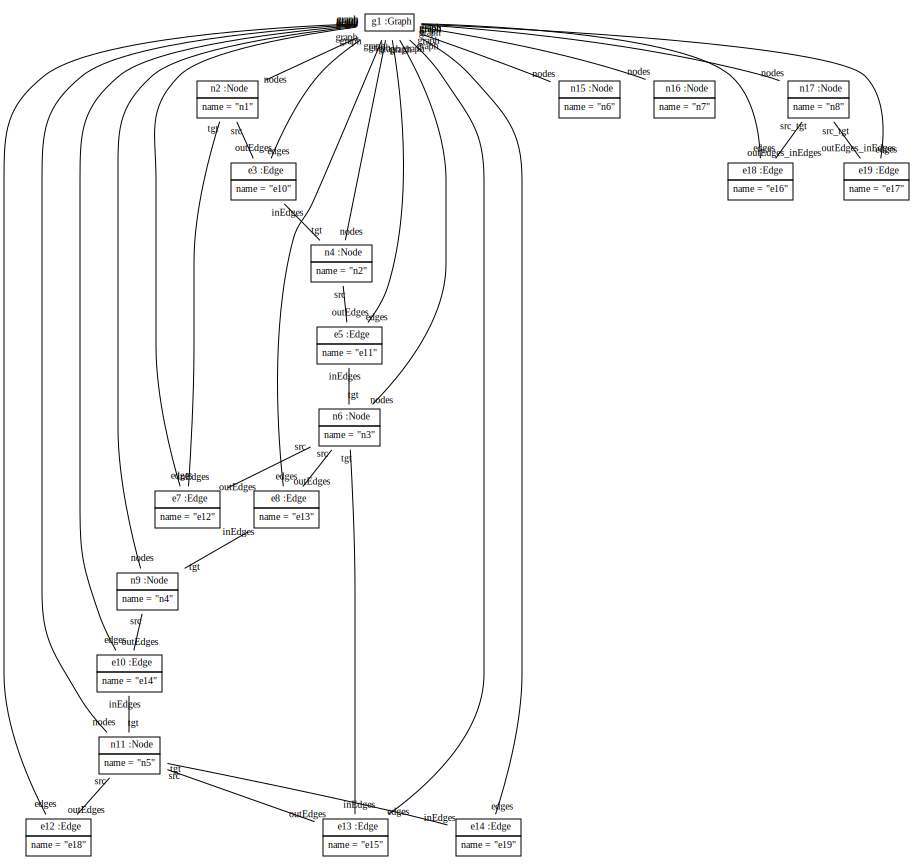
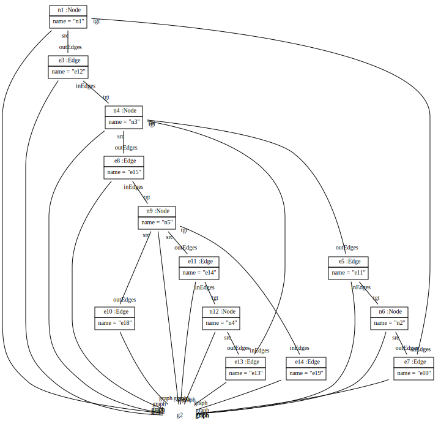
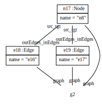
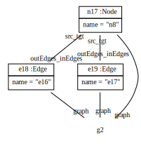
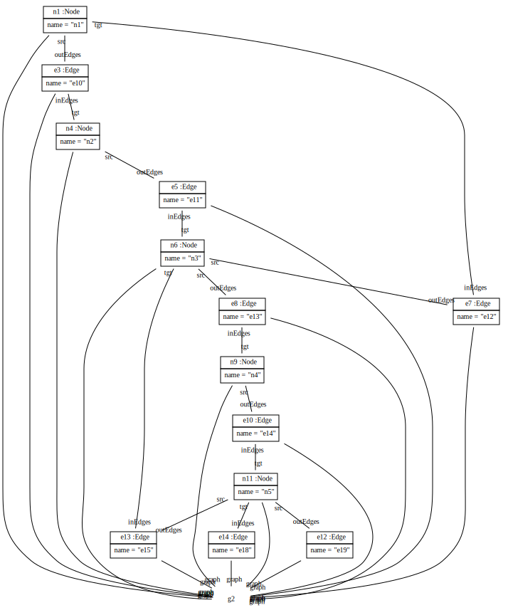
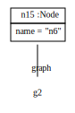
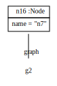

Scenario TTC2011HelloWorldReverseEdges
create example graph:


public ModelPattern reverseEdgesPerPattern(Graph graph)
{
ModelPattern p = new ModelPattern();
EdgePO edgesPO = p.hasElementGraphPO(graph).hasEdges();
NodePO srcPO = edgesPO.hasSrc();
NodePO tgtPO = edgesPO.hasTgt();
p.startCreate();
edgesPO.hasSrc(tgtPO);
edgesPO.hasTgt(srcPO);
systemout = "Number of reversed edges: " + p.allMatches();
return p;
}
Result graph:

 

Number of reversed edges: 8
public void reverseEdgesInJava(Graph graph)
{
int noOfMatches = 0;
for (Edge edge : graph.getEdges())
{
Node src = edge.getSrc();
Node tgt = edge.getTgt();
edge.setSrc(tgt);
edge.setTgt(src);
noOfMatches++;
}
systemout = "Number of reversed edges: " + noOfMatches;
}
Result graph:  

Number of reversed edges: 10